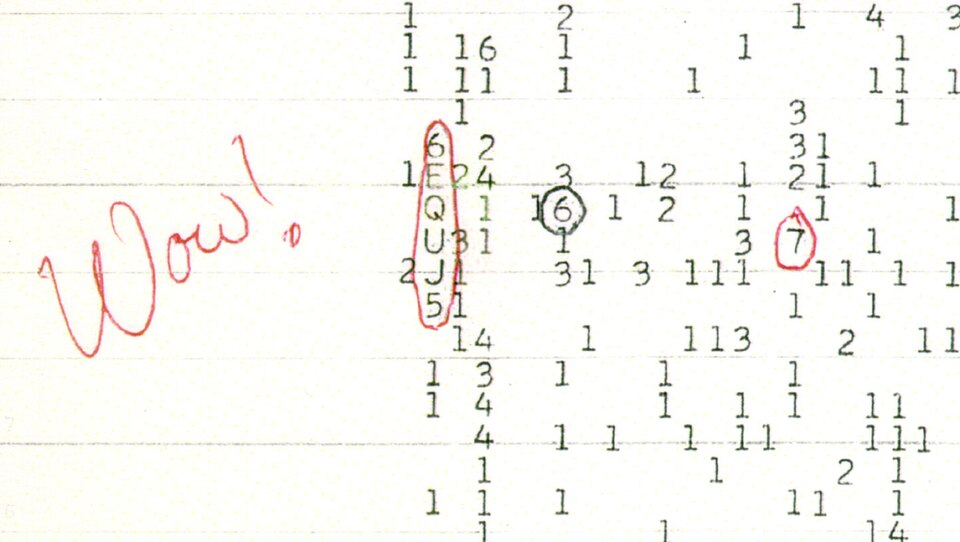
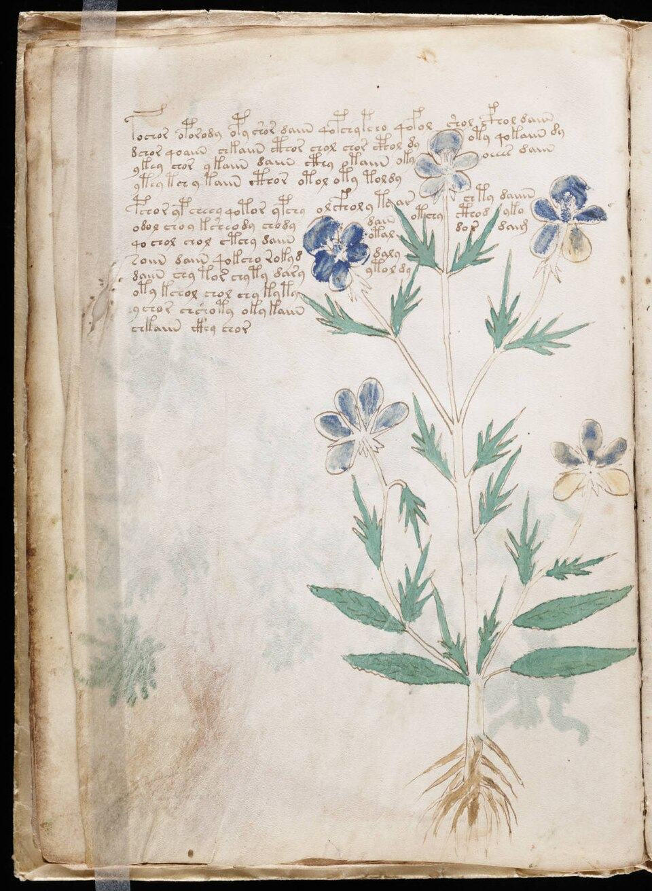
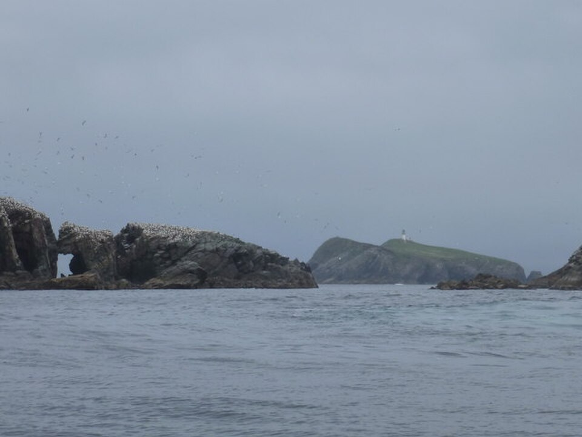

¿Qué es Archivo 404?
Archivo 404 es un espacio dedicado a reunir, documentar y analizar los casos más desconcertantes de la historia. Desapariciones que desafían toda lógica, señales que nadie sabe quién envió, objetos que no deberían existir y muertes que ninguna autopsia logró explicar del todo.
No inventamos respuestas. Ordenamos las preguntas, cruzamos fuentes y dejamos el material disponible para que cada uno saque sus propias conclusiones.
Qué encontrarás en este archivo
Galería del archivo

El incidente del Paso Dyatlov
La tienda del grupo, tal como fue encontrada por el equipo de rescate el 26 de febrero de 1959.

La Señal Wow!
La impresión original con la anotación de Jerry Ehman. La secuencia 6EQUJ5 representa la intensidad de la señal.

El manuscrito Voynich
Folio 33v, con ilustraciones botánicas sin identificar. Biblioteca Beinecke, Universidad de Yale.

El Mary Celeste
Ilustración del bergantín encontrada a la deriva en 1872, con la carga intacta y la tripulación desaparecida.

El faro de las islas Flannan
Eilean Mòr, Escocia, donde desaparecieron los tres fareros en diciembre de 1900.